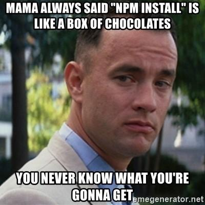

Bypassing a restrictive JS sandbox
While participating in a bug bounty program, I found a site with a very
interesting functionality: it allowed me to filter some data based on a
user-controlled expression. I could put something like book.price > 100 to
make it only show the books that are more expensive than $100. Using true as
filter showed me all the books, and false didn't show anything. So I was
able to know whether the expression I used was evaluating to true or false.
That functionality caught my attention so I tried passing it more complex
expressions, like (1+1).toString()==="2" (evaluated to true) and
(1+1).toString()===5 (evaluated to false). This is clearly JavaScript code,
so I guessed that the expression was being used as an argument to a function
similar to eval, inside a NodeJS server. It seemed like I was close to find
a Remote Code Execution vulnerability. However, when I used more complex
expressions, I was getting an error saying that they were invalid. I guessed
that it wasn't the eval function that parsed the expression, but a kind
of sandbox system for JavaScript.
Sandbox systems used to execute untrusted code inside a restricted environment are usually hard to get right. In most cases there exist ways to bypass this protections to be able to execute code with normal privileges. This is specially true if they try to limit the usage of complex, feature bloated languages like JavaScript. The problem had already caught my attention, so I decided to spend my time trying to break this sandbox system. I would learn about JavaScript internals, and gain some bucks in case of finding and exploiting the RCE.
The first thing I did was identify what library the site was using to implement the sandbox, given that the NodeJS ecosystem is known for having tens of libraries that do the same thing, and in many cases all of them are doing it wrong. Maybe it was a custom sandbox library used only for the target site, but I discarded this possibility because it was really unlikely that the developers spent their time doing this kind of things.
Finally, by analyzing the app error messages I concluded that they were using static-eval, a not very known library (but written by substack, somebody well known in the NodeJS community). Even if the original purpose of the library wasn't to be used as a sandbox (I still don't understand what it was created for), its documentation suggests that. In the case of the site I was testing, it certainly was being used as a sandbox.
Breaking static-eval
The idea of static-eval is to use the esprima library to parse the
JS expression and convert it to an AST (Abstract Syntax Tree). Given
this AST and an object with the variables I want to be available inside the
sandbox, it tries to evaluate the expression. If it finds something strange,
the function fails and my code isn't executed. At first I was a bit demotivated
because of this, since I realized that the sandbox system was very restrictive
with what it accepted. I wasn't even able to use a for or while statement
inside my expression, so doing something that required an iterative algorithm
was almost impossible. Anyway, I kept trying to find a bug in it.
I did not find any bug at first sight, so I looked at the commits and pull requests of the static-eval GitHub project. I found that the pull request #18 fixed two bugs that allowed a sandbox escape in the library, exactly what I was looking for. I also found a blog post of the pull request author that explained this vulnerabilities in depth. I immediately tried using this techniques in the site I was testing, but unfortunately to me, they were using a newer static-eval version that already patched this vulns. However, knowing that somebody has already been able to break this library made me more confident so I kept looking for new ways to bypass it.
Then, I analyzed this two vulns in depth, hoping this could inspire me to find new vulnerabilities in the library.
Analysis of the first vulnerability
The first vuln used the function constructor to make a malicious function. This technique is frequently used to bypass sandboxes. For example, most of the ways to bypass the angular.js sandbox to get an XSS use payloads that end up accessing and calling the function constructor. It was also used to bypass libraries similar to static-eval, like vm2. The following expression shows the existence of the vulnerability by printing the system environment variables (this shouldn't be possible because the sandbox should block it):
"".sub.constructor("console.log(process.env)")()
In this code, "".sub is a short way to obtain a function ((function(){})
would also work). Then it access to the constructor of that function. That is
a function that when called returns a new function whose code is the string
passed as argument. This is like the eval function, but instead of executing
the code immediately, it returns a function that will execute the code when
called. That explains the () at the end of the payload, that calls the
created function.

You can do more interesting things than showing the environment variables. For
example, you can use the execSync function of the child_process NodeJS
module to execute operating system commands and return its output. This payload
will return the output of running the id command:
"".sub.constructor("console.log(global.process.mainModule.constructor._load(\"child_process\").execSync(\"id\").toString())")()
The payload is similar to the previous one, except for the created function's
body. In this case, global.process.mainModule.constructor._load does the
same as the require function of NodeJS. For some reason I ignore, this
function isn't available with the name require inside the function
constructor, so I had to use that ugly name.

The fix for this vulnerability consisted in blocking the access to properties
of objects that are a function (this is done with typeof obj == 'function'):
else if (node.type === 'MemberExpression') { var obj = walk(node.object); // do not allow access to methods on Function if((obj === FAIL) || (typeof obj == 'function')){ return FAIL; }
This was a very simple fix, bit it worked surprisingly well. The function
constructor is available, naturally, only in functions. So I can't get access
to it. An object's typeof can't be modified, so anything that is a function
will have its typeof set to a function. I didn't find a way to bypass this
protection, so I looked at the second vuln.
Analysis of the second vuln
This vuln was way more simple and easy to detect than the first one: the problem was that the sandbox allowed the creation of anonymous functions, but it didn't check their body to forbid malicious code. Instead, the body of the function was being directly passed to the function constructor. The following code has the same effect than the first payload of the blog post:
(function(){console.log(process.env)})()
You can also change the body of the anonymous function so it uses execSync
to show the output of executing a system command. I'll leave this as an
exercise for the reader.
One possible fix for this vulnerability would be to forbid all anonymous function declarations inside static-eval expressions. However, this would block the legitimate use cases of anonymous functions (for example, use it to map over an array). Because of this, the fix would have to allow the usage of benign anonymous functions, but to block the usage of malicious ones. This is done by analyzing the body of the function when it is defined, to check it won't perform any malicious actions, like accessing the function constructor.
This fix turned out to be more complex than the first one. Also, Matt Austin (the author of the fix) said he wasn't sure it would work perfectly. So I decided to find a bypass to this fix.
Finding a new vulnerability
One thing that caught my attention was that static-eval decided whether the function was malicious or not at definition time, and not when it was being called. So it didn't consider the value of the function arguments, because that would require to make the check when the function is called instead.
My idea was always trying to access the function constructor, in a way that bypasses the first fix that forbids that (because I'm not able to access properties of functions). However, what would happen if I try to access the constructor of a function parameter? Since its value isn't known at definition time, maybe this could confuse the system and make it allow that. To test my theory, I used this expression:
(function(something){return something.constructor})("".sub)
If that returned the function constructor, I would have a working bypass. Sadly
for me, it wasn't the case. static-eval will block the function if it accesses
a property of something with an unknown type at function definition time (in
this case, the something argument).
One useful feature of static-eval that is used in almost all cases, is allowing
to specify some variables you want to be available inside the static-eval
expression. For example, in the beginning of the blog post I used the expression
book.price > 100. In this case, the code calling static eval will pass it the
value of the book variable so it can be used inside the expression.
This gave me another idea: what would happen if I make an anonymous function
with an argument whose name is the same as an already defined variable? Since
it can't know the value of the argument at definition time, maybe it uses the
initial value of the variable. That would be very useful to me. Suppose I have
a variable book and its initial value is an object. Then, the following
expression:
(function(book){return book.constructor})("".sub)
would have a very satisfactory result: when the function is defined,
static-eval would check if book.constructor is a valid expression. Since
book is initially an object (whose typeof is object) and not a function,
accessing to its constructor is allowed and the function will be created.
However, when I call this function, book will take the value passed as
argument to the function (this is "".sub, another function). Then it will
access and return its constructor, effectively returning the function
constructor.
Sadly, this didn't work either because the author of the fix considered this
case. At the moment of analyzing the function's body, the value of all its
arguments it set to null, overriding the initial value of the variables. This
is a fragment of the code doing that:
node.params.forEach(function(key) { if(key.type == 'Identifier'){ vars[key.name] = null; } });
This code takes the AST node that defines the function, iterates over each of
its parameters whose type is Identifier, takes its name and sets to null the
attribute of vars with that name. Even if the code looks correct, it has a
very common bug: it doesn't cover all possible cases. What would happen if an
argument is something strange and its type isn't Identifier? instead of
doing something sane and saying "I don't know what this is, so I'll block the
entire function" (like in a whitelist), it will ignore that argument and
continue with the rest (like a blacklist). This means that if I make a node
representing a function argument have a type different from Identifier, the
value of the variable with that name won't be overwritten, so it would use the
initial value. At this time I was pretty confident that I found something
important. I only needed to find how to set the key.type to something
different from Identifier.
As I commented before, static-eval uses the esprima library to parse the code we give to it. According to its documentation, esprima is a parser that fully supports the ECMAScript standard. ECMAScript is something like a dialect of JavaScript with more features, that makes its syntax more comfortable to the user1.
One feature that was added to ECMAScript is function parameter destructuring. With this feature, the following JS code is now valid:
function fullName({firstName, lastName}){ return firstName + " " + lastName; } console.log(fullName({firstName: "John", lastName: "McCarthy"}))
The curly braces inside the definition of the function arguments indicate that
the function doesn't take two arguments firstName and lastName. Instead, it
takes just one argument that is an object that must have the firstName and
lastName properties. The previous code is equivalent to the following:
function fullName(person){ return person.firstName + " " + person.lastName; } console.log(fullName({firstName: "John", lastName: "McCarthy"}))
If we see the AST generated by esprima (I did it by using this tool), we will have a very satisfactory result:
Indeed, this new syntax makes the function argument have a key.type different from
Identifier, so static-eval won't use it when it overrides the variables. This way,
when evaluating
(function({book}){return book.constructor})({book:"".sub})
static-eval will use the initial value of book, that is an object. Then, it
allows the creation of the function. But when it is called, book will be a
function, so the function constructor is now returned. I found the bypass!
The previous expression returns the function constructor, so I only have to call it to create a malicious function, and then call this created function:
(function({book}){return book.constructor})({book:"".sub})("console.log(global.process.mainModule.constructor._load(\"child_process\").execSync(\"id\").toString())")()
I tried evaluating this expression in a local environment with the last version of static-eval, and I got what I was expecting:

Mission accomplished! I found a bypass to the static-eval library allowing me
to get code execution in the machine that uses it. The only required condition
to make it work was knowing the name of a variable whose value isn't a
function, and that has a constructor attribute. Both strings, numbers, arrays
and objects fulfill this property, so it should be easy to achieve this
condition. I only needed to use this technique in the site I was testing, get a
PoC of the RCE and claim my money. Pretty simple. Or maybe not?
Discovering that the exploit didn't work in my target
Unfortunately, not. After doing all this work and find an elegant and functional bypass, I realized that it was not going to work in the site I was testing. The only condition required was to have the name of a variable whose value isn't a function, so you might be thinking I couldn't get it to make my technique work. However, it did satisfy this condition. The reason it didn't work is even more bizarre.
To give some context, the site wasn't using static-eval directly. It was using it through the jsonpath npm library. JSONPath is a query language with the same purpose as XPATH but made for JSON documents instead of XML ones. It was initially published in 2007 in this article.
After reading the JSONPath documentation, I realized that it is a very poor project, with a really vague specification about how it should work. Most of the features it implements were probably made in an afterthought, without properly considering if adding them was worth it, or if it was just a bad idea. It's a shame that the NodeJS ecosystem is full of libraries like this one.

JSONPath has a feature called filter expressions, that allows filtering
documents that match a given expression. For example, $.store.book[?(@.price <
10)].title will get the books cheaper than $10, and then get their title. In
the case of the jsonpath npm library, the expression between parenthesis is
evaluated using static-eval. The site I was testing allowed me to specify a
JSONPath expression and parsed it with that library, so the RCE there was
evident.
If we see the previous JSONPath expression in detail, we can see that the
expression passed to static-eval is @.price < 10. According to the
documentation, @ is a variable containing the document being filtered
(usually it is an object). Unfortunately, the creator of JSONPath had the idea
to name this variable @. According to the ECMAScript specification, this isn't
a valid variable name. So to make static-eval work, they had to do a horrible
thing that is patching the esprima code so it considers @ as a valid
variable name.
When you create an anonymous function in static-eval, it is embedded into
another function that takes as argument the already defined variables. So if I
create an anonymous function inside a JSONPath filter expression, it will
create a function wrapping it that takes an argument named @. This is done by
directly calling the function constructor, so it doesn't use the esprima patch
of before. Then, when defining the function, it'll throw an error that I won't
be able to avoid. This is just a bug in the library, that makes it fail
when defining functions (both benign and malicious) inside filter expressions.
And because of this, my bypass technique won't work with this library.
Just because of the horrible decision of naming a variable @ in a library
that is used mainly in JS, where @ isn't a valid variable name in JS, I
wasn't able to exploit the RCE in the site and obtain a 4-digit bounty. Why
wouldn't the author name it _ (that is a valid variable name), document or
joseph!! This time, I'll have to settle only with having discovered a great
vulnerability in the library, and having learned a lot about JavaScript.
Conclusions
Even if I wasn't able to get the bounty I was expecting, I had a really good time playing with this library. And I used the concepts I learned to bypass a different kind of restricted JS environments, this time getting an economic reward. I hope to publish this other research soon.
I want to mention again the great previous work done by Matt Austin about static-eval. Without this material, maybe I wouldn't have found this new vulnerability.
As a general recommendation when testing a system, it is always tempting to replicate and isolate one feature of it in a local environment we control, so we can play with it more freely. In my case, I made a Docker instance with the static-eval library to try bypassing the sandbox. My problem was that I only used this instance during the whole research, without corroborating that what I was doing was valid in the real site. If I had done this before, maybe I would have noticed this wasn't going to work and I'd have moved to something else. The lesson learned is that you shouldn't abstract so much over a whole system, and that you should continuously test what you found in the real system, instead of doing it just at the end of your research.
Finally, if you're auditing a site that has a similar system that evaluates user-controlled expressions inside a sandbox, I highly recommend you to play with it a considerable amount of time. It would be strange to find a sandbox system free of vulnerabilities, specially if it executes dynamic, fully-featured programming languages like JavaScript, Python or Ruby. And when you find this kind of sandbox bypass vulns, they usually have a critical impact in the application that contains them.
I hope you enjoyed this post. Greetings!
Extra: Cronology of the vuln
- 01/02/19 - Report of the vulnerability submitted both to the NodeJS security team and to the static-eval mantainer. You can read the original report here
- 01/03/19 - The NodeJS security team replicated the bug. The told me they were going to contact the library mantainer and publish an advisory if he didn't respond to the report
- 02/14/19 - Advisory officially published in the nmpjs site
- 02/15/19 - The library was fixed and a new version of it was released
- 02/18/19 - The library's README file was updated to add a disclaimer saying that the library shouldn't be used as a sandbox
- 02/26/19 - A new fix was applied to the library because my original fix had a bug and static-eval was still vulnerable
-
It's worth noting that this is a pretty vague and incorrect definition of what ECMAScript is. My indifference to the JavaScript ecosystem makes me don't even bother in finding a more correct definition. ↩
Comments
Comments powered by Disqus